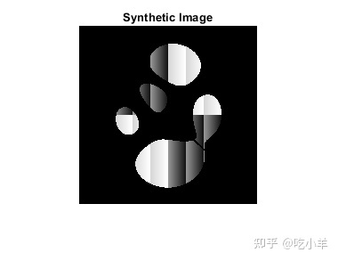
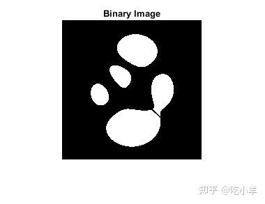
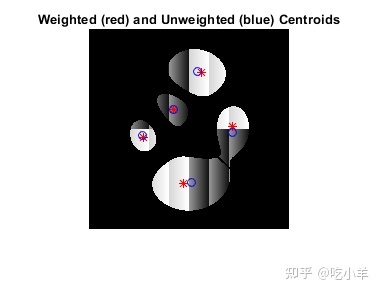
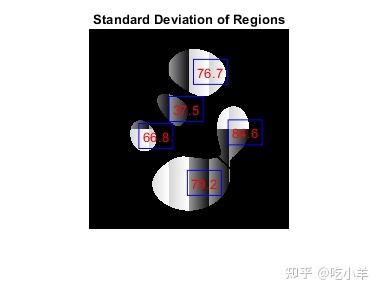
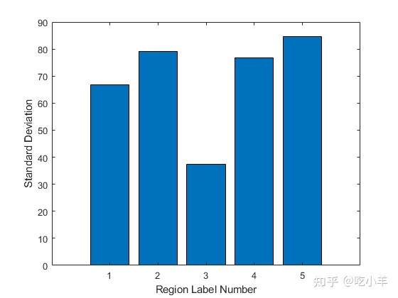
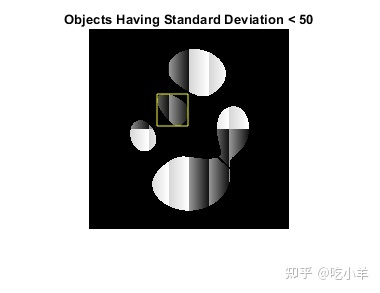

Home
本示例说明如何测量灰度图像中对象的属性。为此，首先对灰度图像进行分割以获得对象的二值图像。然后，使用 regionprops 分析二值图像中每个对象对应的原始灰度像素值。
步骤 1：创建合成图像
使用辅助函数propsSynthesizeImage来创建包含五个不同区域的灰度图像。
I = propsSynthesizeImage;
imshow(I)
title('Synthetic Image')

第 2 步：创建二进制图像
通过创建包含图像中对象的二值图像来分割灰度图像。
BW = I > 0;
imshow(BW)
title('Binary Image')

步骤 3：使用灰度图像的像素值计算对象属性
regionprops函数支持多个可用于灰度图像的属性，包括“WeightedCentroid”、“MeanIntensity”、“MinIntensity”和“MaxIntensity”。这些属性使用对象的原始像素值进行计算。
例如，您可以使用regionprops计算图像中对象的质心和加权质心。请注意如何将包含对象的二进制图像 (BW) 和原始灰度图像 ( I) 作为参数传入regionprops.
s = regionprops(BW,I,{'Centroid','WeightedCentroid'});
要将加权质心位置与未加权质心位置进行比较，请显示原始图像，然后使用hold和plot函数将质心叠加在图像上。
imshow(I)
title('Weighted (red) and Unweighted (blue) Centroids');
hold on
numObj = numel(s);
for k = 1 : numObj
plot(s(k).WeightedCentroid(1), s(k).WeightedCentroid(2), 'r*')
plot(s(k).Centroid(1), s(k).Centroid(2), 'bo')
end
hold off

步骤 4：计算基于自定义像素值的属性
您可以使用 'PixelValues' 属性根据原始灰度图像的像素值进行自定义计算。'PixelValues' 属性返回一个向量，其中包含区域中像素的灰度值。
例如，计算每个区域的标准偏差。
s = regionprops(BW,I,{'Centroid','PixelValues','BoundingBox'});
imshow(I)
title('Standard Deviation of Regions')
hold on
for k = 1 : numObj
s(k).StandardDeviation = std(double(s(k).PixelValues));
text(s(k).Centroid(1),s(k).Centroid(2), ...
sprintf('%2.1f', s(k).StandardDeviation), ...
'EdgeColor','b','Color','r');
end
hold off

该图显示了叠加在图像中每个对象上的标准偏差测量。您还可以通过其他方式查看结果，例如作为按标签编号显示标准偏差的条形图。
figure
bar(1:numObj,[s.StandardDeviation])
xlabel('Region Label Number')
ylabel('Standard Deviation')

您可以使用该图来确定如何对数据进行分区。例如，以下代码标识标准偏差低于 50 的对象。
sStd = [s.StandardDeviation];
lowStd = find(sStd < 50);
imshow(I)
title('Objects Having Standard Deviation < 50')
hold on
for k = 1 : length(lowStd)
rectangle('Position',s(lowStd(k)).BoundingBox,'EdgeColor','y');
end
hold off

======================================================================
我的测试结果及程序
下面是我测试的代码：

注：本文根据MATLAB官网内容修改而成。